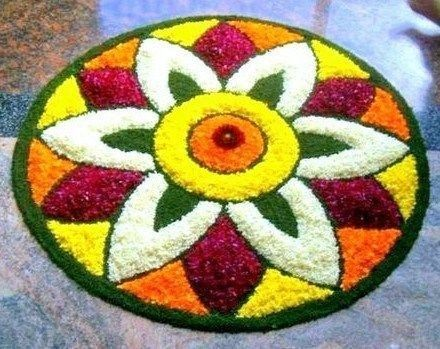

Onam Celebration
Onam commemorates the return of the generous daitya king Mahabali after he was banished to the netherworld by Vamana.

It is an annual harvest and Hindu cultural festival celebrated mostly by the people of Kerala.
Onam falls in the month of Chingam, which is the first month according to the Malayalam Calendar.
The Onapookkalam is made out of gathered blossoms to decorate patterns on the floor.
The Onam sadya is a feast served on plantain leaves, consisting of many dishes.
For more reference on Onam, visit this link.